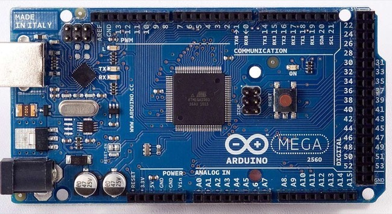
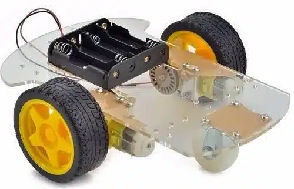
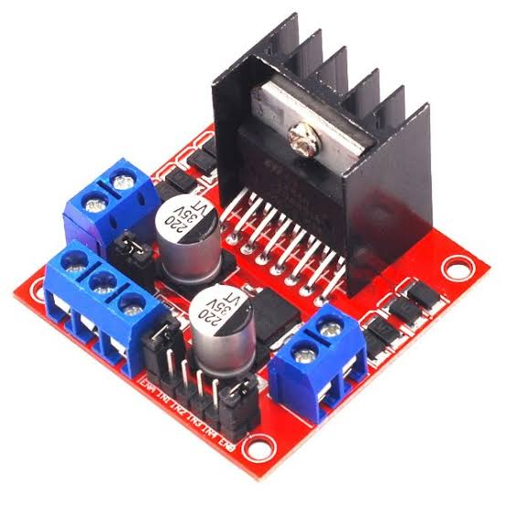
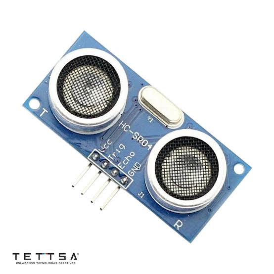
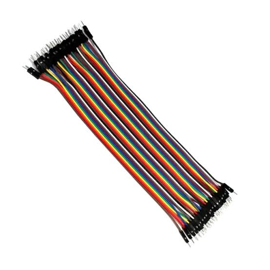
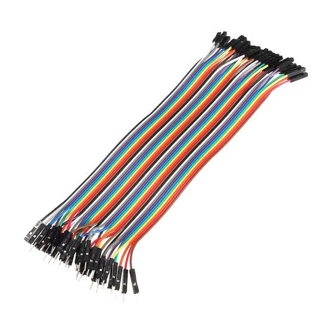
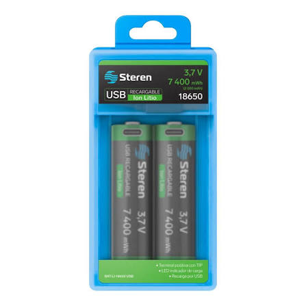
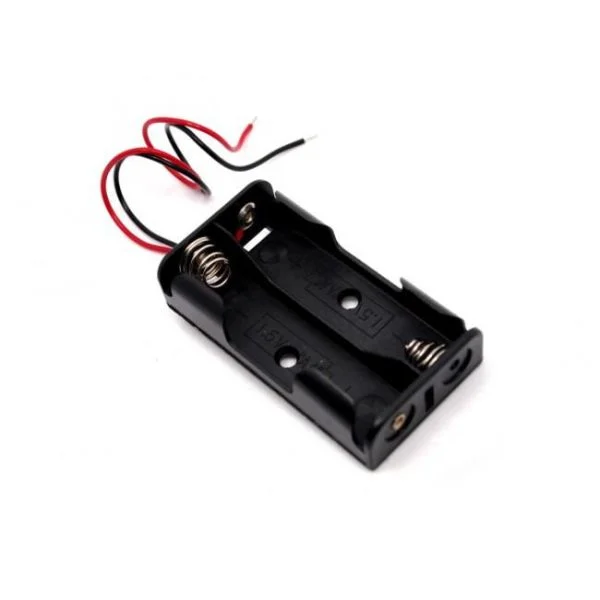

Feria de Ciencias 2026
Carro Autónomo Esquivador de Obstáculos
Diseñamos y ensamblamos un prototipo sobre ruedas capaz de detectar paredes y objetos en tiempo real sin chocar, usando lógica en Arduino y un sensor ultrasónico.
¿Cómo toma decisiones el robot?
El circuito combina la lectura del espacio con la respuesta inmediata de los motores en cuatro pasos simples:
Emisión del pulso
El sensor ultrasónico dispara un pulso de sonido imperceptible a través de su pin Trigger.
Rebote y Eco
La onda choca con el obstáculo más cercano y regresa al pin Echo del sensor.
Cálculo en la placa
El Arduino procesa cuánto tiempo tardó la onda en ir y regresar para calcular la distancia en centímetros.
Giro de emergencia
Si el objeto está a menos de 20 cm, detiene una rueda y gira sobre su propio eje para cambiar de dirección.
Componentes y Piezas Utilizadas

Placa Arduino Uno
Tarjeta principal que guarda el programa y coordina las órdenes entre las lecturas y los motores.

Chasis y 2 Motores DC
Base acrílica con interruptor de encendido y motores con llantas de goma de alta adherencia.

Controlador Puente H (L298N)
Módulo de potencia necesario para regular velocidad y cambiar el sentido de giro de los motores.

Sensor Ultrasónico HC-SR04
Funciona como los ojos del carrito, midiendo distancias desde 2 cm hasta 4 metros.

Cables Macho-Macho
Utilizados para llevar corriente y señales entre los pines de la placa y el protoboard.

Cables Macho-Hembra
Indispensables para conectar las terminales del sensor ultrasónico y del controlador L298N.

2 Baterías Li-Ion 18650
Pilas recargables de litio que dan el flujo de energía constante para alimentar los motores.

Porta Pilas Doble
Soporte donde montamos las dos baterías en serie para sumar un total de 7.4V de potencia.
Lógica del Algoritmo (Arduino C++)
const int trigPin = 9;
const int echoPin = 10;
const int motorIzquierdo = 5;
const int motorDerecho = 6;
void setup() {
pinMode(trigPin, OUTPUT);
pinMode(echoPin, INPUT);
pinMode(motorIzquierdo, OUTPUT);